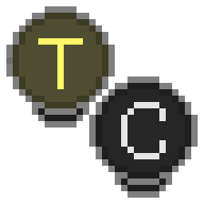
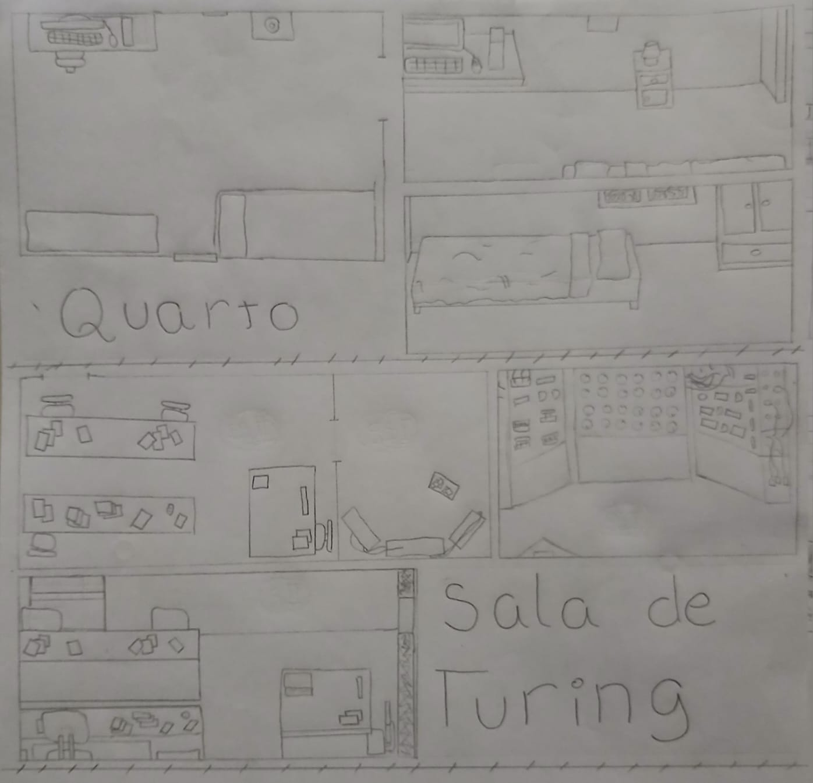
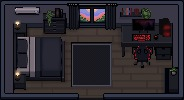
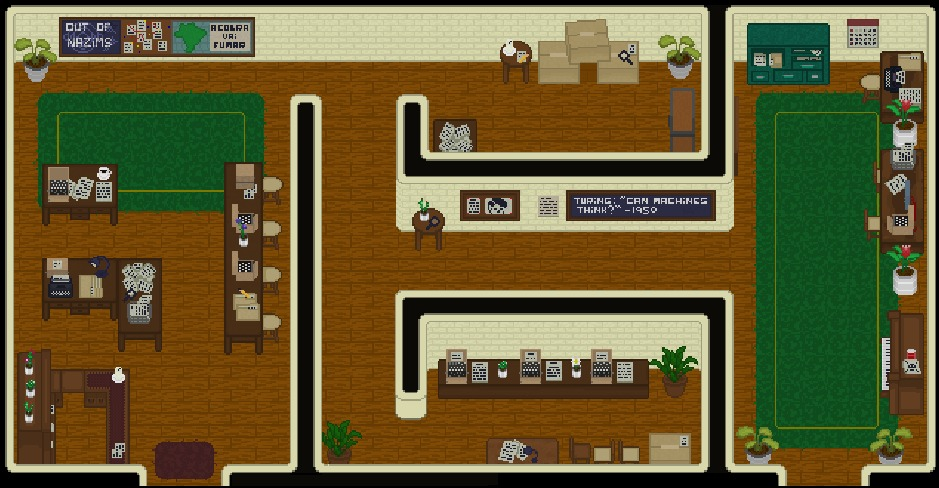
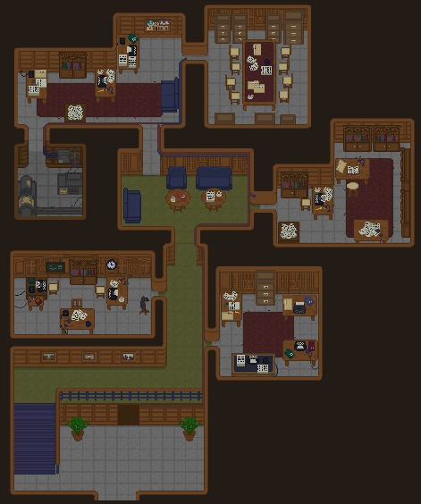
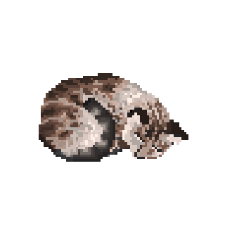
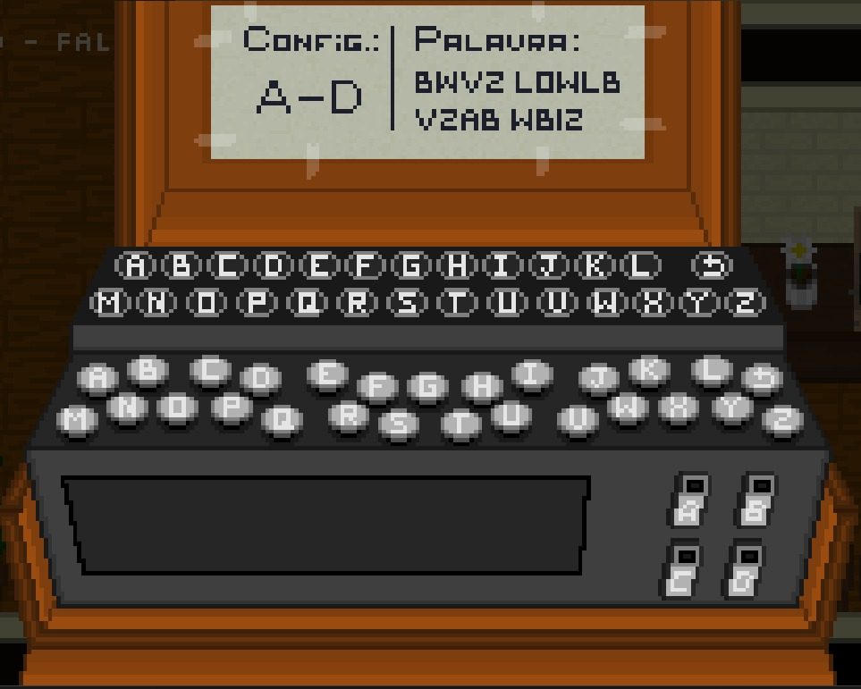
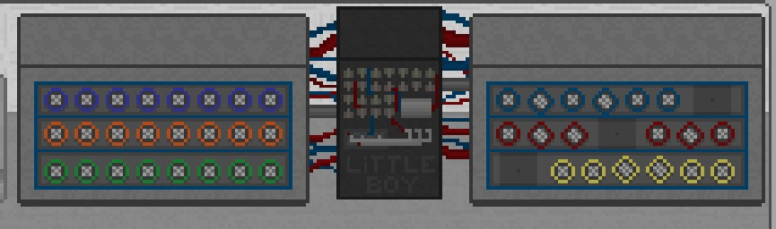

.png)

Turing's Code é um jogo digital educativo de gênero puzzle desenvolvido por nós, estudantes do 1º ano do Ensino Técnico Integrado em Desenvolvimento de Sistemas do IFSP (Campus São Paulo). O projeto tem como objetivo principal conectar a aprendizagem técnica à cultura de jogos eletrônicos (Game-Based Learning), direcionando-se a jovens do ensino médio e jovens adultos. Utilizando o motor gráfico GameMaker e uma direção de arte inspirada em pixel-art, a narrativa e as mecânicas do jogo resgatam o contexto histórico de Bletchley Park e os primórdios da computação durante a Segunda Guerra Mundial.
O Turing's Code só roda em PC ou notebook. Acesse este site por um computador para jogar.
Alan Torres é interrompido novamente de sua longa partida de video game por sua mãe que avisa ele que vão recebe a visita do seu primo Theo, que traz uma misteriosa caixa de madeira antiga chamada Enigma, antes usada para criptografrar códigos. Assim ao investigarem a caixa encontram um bilhete no interior dela que tem um nome escrito e Alan surpreso com o misterioso bilhete resolve digitar o que está escrito na caixa, mas algo inesperado acontece, o objeto começa a girar suas engrenagens levando-os para a época da Segunda Guerra Mundial.
Alan e Theo são teletransportados inexplicavelmente para um galpão escuro em 1943.
Onde eles se encontram com Alan Turing em Bletchley Park, que lhes explica que para voltarem para casa
precisam ajuda-ló a recolher as Válvulas de Comutação Mestra, que são as válvulas que faltam para colocar a máquina Bombe e faze-lá
funcionar.
Após superarem várias missões complexas pelos huts, os primos entregam a última válvula a Alan Turing. A máquina Bombe ativa-se com um brilho intenso e os dois voltam para casa, no quarto de Alan Torres. Embora para eles tenha tido uma grande aventura temporal, para a mãe Ada parece apenas que passaram a tarde inteira jogando, mas eles sabem que não foi bem isso...
Para dar vida a essa história, iniciaimente colocamos a imaginação no papel, fazendo um StoryBord para ficar mais claro como iamos realizar o projeto visualmente.



*Claro que o jogo deu uma mudada com o tempo e está um pouco diferente do StoryBoard... : )

O começo e o ponto de partida para o desconhecido. Um espaço moderno e totalmente digital, repleto de equipamentos eletrónicos, um setup gamer iluminado e várias telas acesas. Este ambiente contemporâneo forma um contraste com a misteriosa caixa de madeira(enigma) trazida pelo primo Theo — o catalisador que transforma uma tediante tarde numa viagem alucinante pelo tempo até aos segredos de 1943. É aqui, entre o brilho das luzes modernas e o eco mecânico de uma relíquia do passado, que tudo começa e termina.

O laboratório de criptoanálise. Um galpão de madeira escuro e abafado, onde o silêncio é cortado apenas pelo constante raspar de giz nos quadros-negros. É aqui, entre fios elétricos expostos e papéis perfurados, que cada linha de código inimigo representa uma corrida contra o tempo. Sob a tensão constante de 1943, este é um dos postos-chave que os primos terão de desbravar para recuperar as preciosas válvulas e escapar de volta para época presente.

Onde os segredos dos oceanos e dos submarinos alemães são decifrados. Entrar no Hut 8 é como mergulhar na parte mais tensa e secreta de Bletchley Park. Este galpão de madeira abafado e iluminado por luzes fracas cheira a café frio, papel envelhecido e fiação elétrica sobrecarregada. Entre quadros-negros e mesas cobertas de mensagens interceptadas dos temidos U-boats, cada clique mecânico da enigma ecoa como uma contagem decrescente. Para encontrar a Válvula Beta e avançar na missão de voltar para casas.

Um oásis de alta tensão e segredos de guerra. Aqui, esconde-se os mais diversos mistérios, mas especialmente as Válvulas de Comutação Mestra, cercada por huts cheios de papeis furados, quadros-negros e fios expostos, mentes brilhantes lutam contra o relógio para quebrar o tão difícil código Enigma. Cada pista conta para encontrar as válvulas perdidas e conseguir o caminho de volta a casa.

Cruzar as portas da imponente mansão vitoriana é deixar para trás a simplicidade dos galpões de madeira e entrar no cérebro estratégico da inteligência britânica. Sob tetos altos decorados, o ambiente mistura a pompa da alta sociedade com a urgência sufocante de uma guerra secreta, onde corredores silenciosos escondem os enigmas mais complexos e decisivos de 1943. É aqui, na fase mais desafiante do percurso, que os primos terão de enfrentar o teste definitivo de lógica e engenharia para recuperar a Válvula Mestra e garantir o caminho de volta a casa.

Ninguém sabe o que se passa lá dentro. A mistériosa mansão cheia de chaves e esconderijos, as portas ficam fechadas afim de guardar aquilo que pode mudar a história da humanidade. A trazer novas esperanças para o mundo que passa por um tempo difícil de muita desunião Ou longo dos corredores e escadas cada passo deixa o caminho de casa mais próximo. Essa sala pode te trazer novas descobretas no meio dessa mansão.

Protagonista e mente lógica do jogo. É o personagem principal controlado pelo jogador nas mecânicas de lógica e programação.

Personagem secundário. Atua como a ponte entre o presente e o passado, traduzindo conceitos modernos de TI para a linguagem de máquinas mecânicas.

O famoso pai da computação, deve dá orientações diretas e dicas para Alan e Theo das missões e concede itens-chave (como a chave-mestre da Mansão).

Estabelece o conflito inicial entre o mundo virtual de Alan e suas responsabilidades, servindo de gancho para a chegada de Theo e o início do mistério da caixa Enigma. (Nota: O nome "Ada" faz uma homenagem histórica a Ada Lovelace, a primeira programadora da história).

NPCs (Personagens Não-Jogáveis) responsáveis por dificultar a entrada dos jogadores nos huts (galpões) e áreas restritas.

Nosso querido gatinho que dorme enquato os créditos passam a traz. Faz referência a gata do nosso líder.

Trata-se de uma representação do retrado pintado do Jorge VI que foi pai da Rainha Elizabeth II, feito em 1937 para celebrar a coroação do monarca.

Principal máquina de criptografia eletromecânica utilizada palas Forças Armadas Britânicas e por orgãos governamentais do Reino Unido. Utilizada para blindar os pontos fracos , garantindo que o inimigo não pudesse fazer o mesmo que os desifradores de Bletchely Park.

Em meados do século XX, foi uma mesa operadora ou painel de comutação telefônica importante para a telecomunicação e tecnologia da época.

Foram muito utilizados na Segunda Guerra Mundial, passando por uma grande revolução tecnológica entre 1939 e 1945, sendo dividida em categorias fundamentais de acordo com sua função.

Enigma foi uma máquina eletromecânica de criptografia com rotores. Utilizada tanto para criptografar como para descriptografar códigos de guerra, foi usada de várias formas na Europa a partir dos anos 1920. Durante a Segunda Guerra Mundial, as versões da Enigma são usadas por praticamente todas as comunicações rádio alemãs (e também as de outras potências do Eixo), tal como para as comunicações telegráficas.

A bomba eletromecânica, ou em inglês simplesmente "Bombe" foi a designação de um equipamento eletromecânico utilizado pelos criptologistas britânicos para auxiliar na decodificação das mensagens secretas alemãs criptografadas pela máquina "Enigma", durante a Segunda Guerra Mundial.O desenho inicial da Bombe foi produzido em 1939 na Government Code and Cypher School (GC&CS) em Bletchley Park por Alan Turing.
A arquitetura de software de Turing 's Code foi projetada sob uma abordagem modular para garantir que o jogo tenha um bom funcionamento, jogabilidade e um código simples e funcional. O sistema é estruturado utilizando o motor GameMaker e a linguagem de script GameMaker Language (GML), onde criamos o jogo integralmente pela a plataforma. Trazendo a seguir, imagens dos principais códigos:
O documento de projeto do jogo Turing's Code, funciona formalmente como um Game Design Document (GDD), utilizando normas ABNT para o seu desenvolvimento. Ele foi estruturado de maneira acadêmica e modular com o propósito de guiar a criação de um jogo educativo do gênero Puzzle Adventure, fundamentado na abordagem de Game-Based Learning para o público de jovens do ensino médio e adultos. A introdução do material estabelece a motivação de integrar a tecnologia dos jogos eletrônicos à educação, transformando os discentes em agentes ativos no desenvolvimento de ferramentas didáticas que dialogam com conteúdos escolares.
O documento do projeto do site do jogo Lógica de Turing, funciona formalmente como uma especificação técnica e estrutural em normas ANBT, voltada para a criação da apresentação do jogo. Ele foi estruturado de maneira organizada para guiar todo o planeamento, desenvolvimento e suporte da página web oficial associada ao projeto.
Jogue aqui nesse site, sem download, ou entre no nosso repositório e baixe o zip.
Se for baixar o jogo, extraia o zip e abra o aquivo jogo.yyp com o Game Maker (Precisa ter Instalado)
Observe a história introdutória para assim entender o contexto e os objetivos do jogo.
Após ser teletransportado para a Segunda Guerra Mundial, converse com o Alan Turing para entender uma forma de voltar para a casa.
Dicas: Passe por todas as fases coletando os itens e especialmente as válvulas. Não se esqueça de sempre escutar o Turing.
Fase 1: Seu objetivo e encontrar a Válvula Beta. Usando o Theo como jogador.
Fase 2: Seu objetivo e encontrar a Válvula Alfa. Usando o Alan com jogador.
Fase 3: Seu objetivo e encontrar a Válvula Mestra. Usando agora Alan e Theo para desvendar o desafio.
Entregue as válvulas para o Turing e volte para a casa.
Para melhor compreensão do jogo, leia a história, veja nossas documentações e informações presentes aqui no site.
Para contato direto conosco envie um email para: turingscodecontato@gmail.com

Responsável pelo o monitoramento do grupo e do jogo, organizou o decorrer do projeto ao longo do ano e ajudou bastante na produção das sprites e cenários.

Desenvolveu a história do jogo e documentou todo o decorrer do projeto.

Programou o jogo através do GameMaker e criou a arte visual, cenários e efeitos de iluminação, criando as sprites inteiramente a mão.

Criou a arte visual dos personagens e as suas caracteristicas.

Desenvolveu o site, sua estrutura e design visual para a apresentação do jogo.
Agradecemos a todos os professores que ajudaram no desenvolever do jogo.
Especialmente a professora Miyuki que fez tornar esse projeto real e direciona-ló ao longo do curso;
A Ana Mamede por nos ajudar a desenvolver todo a parte do site e tornar a apresentação real ao público;
E ao Luk que já aposentado quando ainda estava dando aula tirou da gente muitas rizadas e aprendizados.
Agradecemos também a presença de todos que assistiram a nossa apresentação! E lembre-se:
" Ás vezes, são as pessoas que ninguém espera nada, que fazem as coisas que ninguém consegue imaginar".